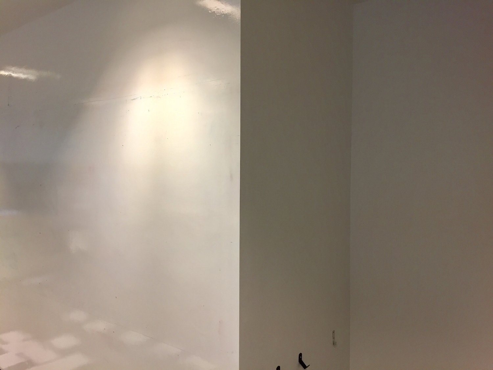
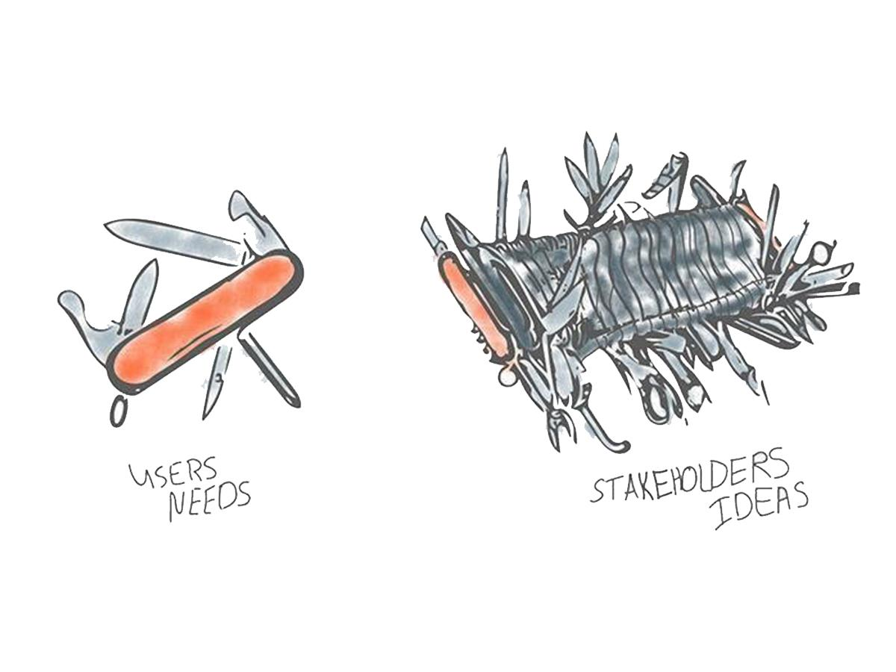
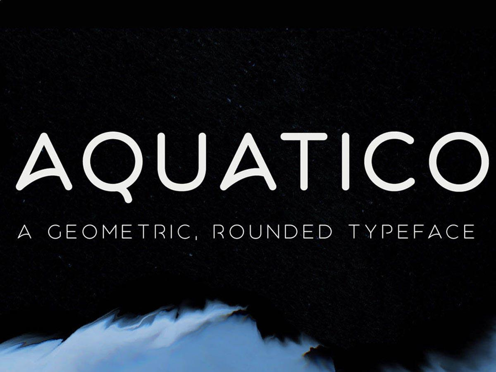
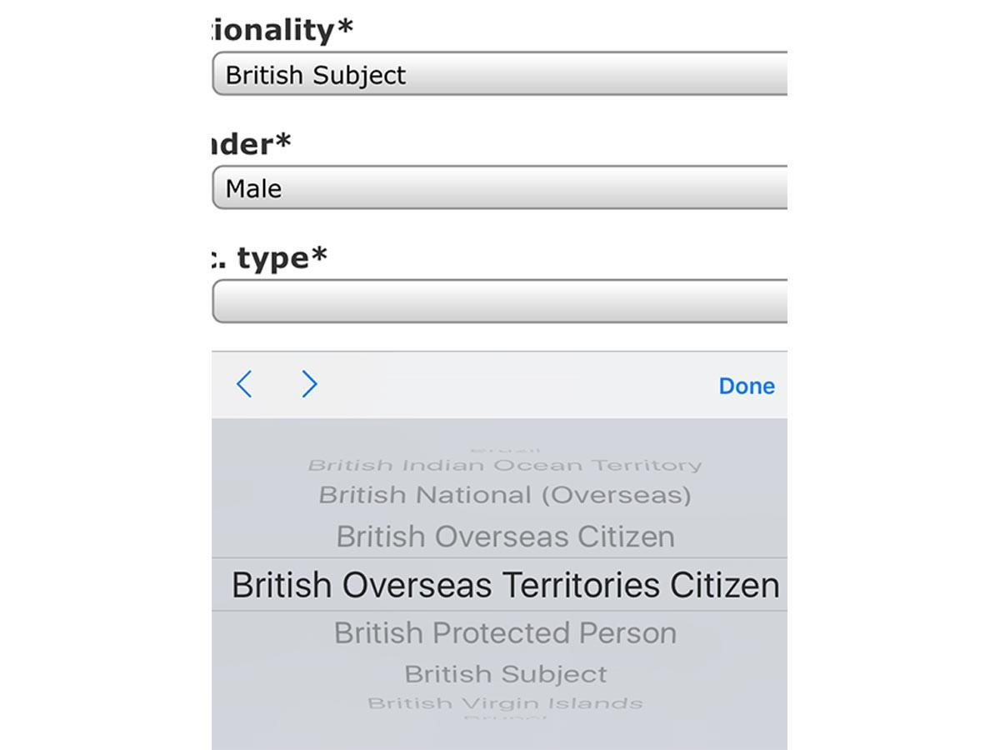

{{ post.smalldesc }}
{% for post in site.posts %}

{% endfor %}









{% for tag in post.tags %}{{ tag }}
Some of these walls are whiteboards, can you tell which?
Why should a self-service till ask me for my payment method?
This looks about right! Sometimes finding the balance can be quite difficult.
Custom fonts in Axure have always been a little tricky but I have found a solution!
Sometimes being a User Experience practitioner means picking and choosing your battles.
Two step verification is great, except for when you can't receive the text.
I came across this great talk on dark patterns - where these user interfaces are used and why.
I've gone solo as a contractor! Welcome to the world J4G Design.
The mark of a great logo is it's identity so I find it fitting that new logos are referring to their past.
Why are there so many options being provided for being British?
Contactless payments are capped at £30, so why not hide the icon?
Writing a long message and no space to read what the previous one was.
In an ever increasing corporate world I think it becomes even more important to remember who we are and that we are not robots./p>
User Experience is starting to be taken seriously by players outside of software development.
An interesting read - lots of good starting points for someone looking to get into UX design.
Google unveiled its new logo this week, to the surprise of many.